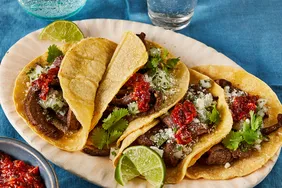

Tacos

Making delicious tacos is a simple task that everyone can enjoy.
My favorite tacos are the fajita tacos which are so delicous and taste great!
You can add onion, tomatoe, chile and cilantro to make them taste even better.
Don't even skip the side of chips and salsa.
Ingredients
- fajita skirt
- seasoning
- onion
- tomatoes
- chile
- cilantro
- tortillas
Cooking Directions
- grill the seasoned fajita
- heat the tortillas with little oil
- cut the onion, tomatoes, chiles and cilantro
- make the hot sauce they way you like it.
- put all ingredients in the tortilla and enjoy the delicous tacos